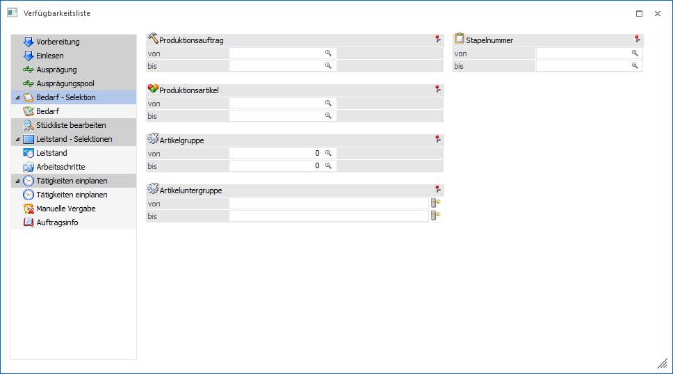

Wenn die Verfügbarkeitsliste über das Menü aufgerufen wird, so erscheint zunächst der Bereich "Selektion". Hier kann definiert werden, für welche Daten eine Verfügbarkeitsprüfung erfolgen soll.
Hinweis
Durch Anwahl des Buttons "Ausgabe Bildschirm" bzw. "Ausgabe Drucker" oder der Taste F5 wird in den Bereich "Verfügbarkeit" gewechselt. Zusätzlich ist der Wechsel auch durch Anwahl des Punkts "Bedarf" innerhalb der linken Navigation möglich.

Folgende Eingabefelder stehen zur Verfügung:
Ø Produktionsauftrag von / bis
Hier kann eine Selektion auf die Produktionsaufträge vorgenommen werden.
Ø Produktionsartikel von / bis
An dieser Stelle kann eine Eingrenzung auf die Produktionsartikel erfolgen, d.h. es werden die Komponenten dieser Artikel analysiert.
Ø Artikelgruppe von / bis
In diesen Feldern kann nach den Artikelgruppen der Komponenten eingeschränkt werden, welche bei der Verfügbarkeitsprüfung berücksichtigt werden sollen.
Ø Artikeluntergruppe von / bis
An dieser Stelle kann nach den Artikeluntergruppen der Komponenten eingeschränkt werden. Bleiben die Felder leer, so werden alle Artikel aller Artikeluntergruppen bei der Prüfung berücksichtigt.
Ø Stapelnummer von / bis
An dieser Stelle kann eine Selektion über die Stapelnummer der Produktionsaufträge vorgenommen werden.